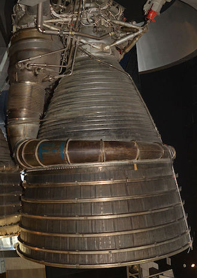
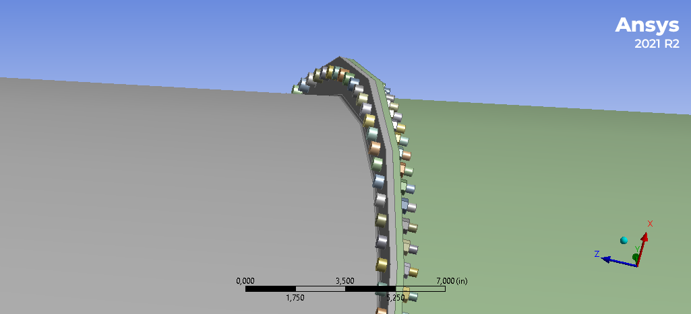
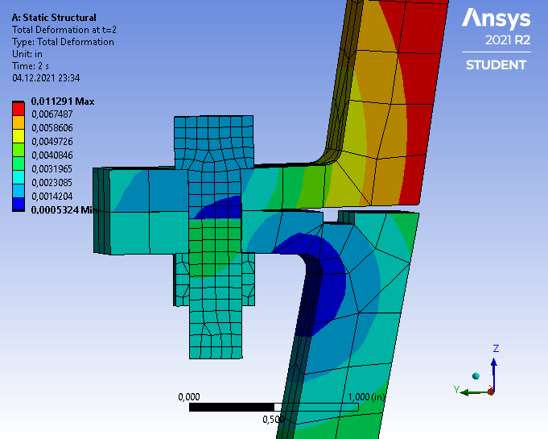
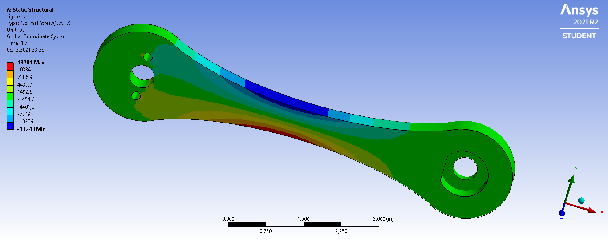

Ansys Mechanical, Static Structural
Во всех задачах при выполении расчетов
- Поставлена задача
- Создана 3D-модель
- Сгенерирована сетка
- Заданы соединения и граничные условия
- Получено численное решение
- Проведен анализ полученного решения и верификация с помощью аналитических формул
Фланцевое соединение нижней и средней части сопла ракетного двигателя
Проанализировано болтовое соединения нижней и средней части сопла ракетного двигателя (в качестве учебного примера рассматривался двигатель F1, устанавливавшийся на американскую ракету Saturn V).
В силу симметрии, моделируется только часть сопла, содержащая половину болта. В расчёте учитываются: преднатяжение болтов; давление газа на стенку, изменяющееся вдоль оси сопла; силы, действующие на газоотводящие каналы; температурные деформации и напряжения.
Проведена оценка запаса прочности болтов. Определены зазоры, которые образуются между соединяемыми деталями при нагружении. Выполнено сравнение с ручным вычислением величин температурного расширения всей модели и напряжений по формуле для тонкостенного цилиндра.
  
Расчеты выполены в рамках модуля Bolted nozzle flange в курсе «A Hands-on Introduction to Engineering Simulations»
Педаль велосипеда
Статический расчёт педали велосипеда, подверженной нагрузке от крутящего педали велосипедиста
Поверхности трёх отверстий закреплены, нагрузка прикладывается к поверхности другого отверстия
Найдены деформированная форма и поле перемещений педали, распределение напряжений. Проведено сравнение с расчётом по теории балок.

Расчеты выполены в рамках модуля Bike crank в курсе «A Hands-on Introduction to Engineering Simulations»